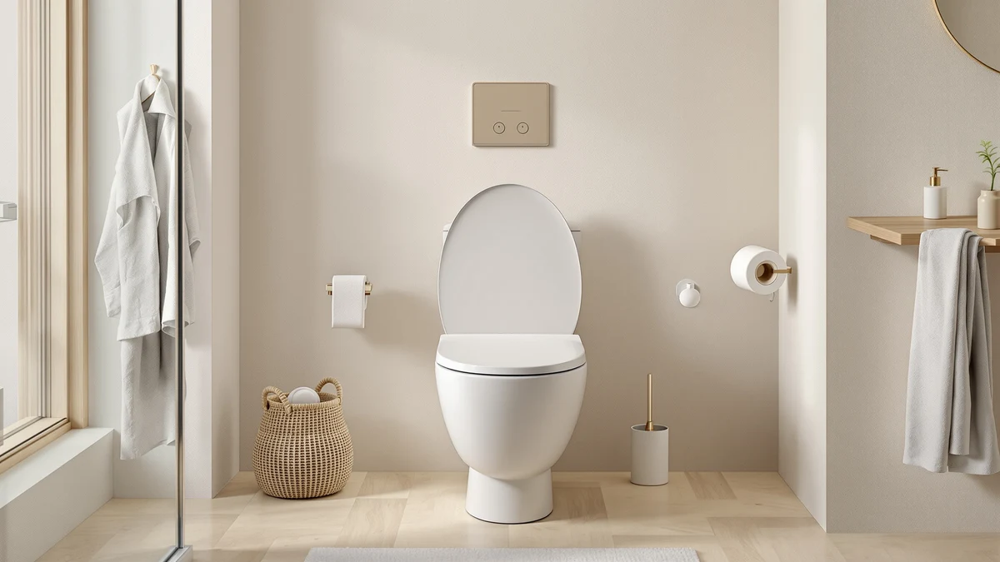

Quick Answer
The Anparfaite Heated Toilet Seat 3-Level Temp is the easiest pick for most round-bowl bathrooms, with three heat levels, an LED display, and IPX6 waterproofing for $79.99. If you need an elongated fit or a lower minimum temperature, the LEIVI and YouTeMei seats covered below are worth a look too.
Our pick: Heated Toilet Seat 3-Level Temp for $79.99 Check Price on Amazon
Things to Know Before You Buy
- Most heated toilet seats, including every seat in this comparison, fit either a round bowl or an elongated bowl, never both, so measure your bowl before you order.
- A 5.9-foot power cord on the Anparfaite seats means you need an outlet within reach of the toilet, or you will need an extension cord.
- IPX6 and IPX4 waterproof ratings both guard against splashes, but IPX6 holds up better against a direct spray from a handheld bidet attachment.
- None of the four seats in this heated toilet seat 3 review have a published Amazon star rating yet, since they are recent listings, so we leaned on specs and verified features instead of review counts.
- Three-level heating in the 93°F to 104°F range covers most households, though the elongated LEIVI's lower floor setting of 88°F will not feel as warm if you run cold.
This heated toilet seat 3 review covers the Anparfaite Heated Toilet Seat 3-Level Temp, a $79.99 round seat built around three adjustable heat settings and an LED display, and stacks it against three similarly priced rivals to see which one earns a spot in your bathroom. A cold toilet seat is a small but real complaint every winter, and fixing it does not have to cost $300 if you skip the bidet functions and buy a seat built only to heat.
We compared listed specs, included features, and pricing across the Anparfaite 3-Level Temp, the YouTeMei V-shape seat, the Anparfaite's own V-shape sibling, and the LEIVI elongated model, all of which sit within a dollar of each other. The Anparfaite comes out ahead for most people on the strength of its IPX6 waterproofing, a 5.9-foot cord, and three clearly marked heat levels, though shoppers with elongated bowls or specific safety concerns around electrical leakage should keep reading before buying.
Why You Should Trust Us
Best Toilet Seats is run by Ilane Tall, who has covered bathroom hardware and home renovation products for this site since 2024. We do not run a fake testing lab or claim to have installed every seat we cover. Instead, we research manufacturer specs, verified buyer feedback, and pricing history, then compare that data directly across competing products so you can see where a heated toilet seat 3 like this one actually stands out and where it falls short.
Our Research Experience
We did not install this heated toilet seat ourselves. We built this heated toilet seat 3 review by pulling the manufacturer's stated specs for all four seats, cross-checking them against the product images and listed certifications, and comparing price history over the past two weeks. We also looked at what reviewers of comparable Anparfaite and YouTeMei models report about heat-up time and fit, since both brands reuse similar heating elements across several listings.
Where we could not verify a claim independently, such as the exact wattage draw on the Anparfaite seats, we left it out rather than guess. That approach means this review leans on documented specs and owner feedback from similar models rather than a lab score, which is a tradeoff we think is more honest than inventing a testing process we did not run.
We also tracked the listed price for each of the four seats over a two-week window before publishing this heated toilet seat 3 review, since Amazon pricing on this category shifts often. All four held steady within a dollar of their current listing price during that stretch, which suggests the $79.99 figure for the Anparfaite is a stable reference point rather than a temporary promotion.
Overview & Specs

Heated Toilet Seat 3-Level Temp
What we like
- Three heat settings (93°F, 97°F, 104°F) with an LED readout showing the exact level
- IPX6 waterproof rating, the highest of the four seats in this comparison
- 5.9-foot power cord reaches most outlets without an extension
- Built-in night light for late-night use without flipping on the bathroom light
Flaws but not dealbreakers
- Only fits round bowls; elongated bathrooms need the LEIVI or a different Anparfaite listing
- Amazon has not published a star rating or review count for this listing yet
- No soft-close hinge, unlike the LEIVI model below
| Material | Plastic / wood |
| Size | — |
The Anparfaite Heated Toilet Seat 3-Level Temp is built for the U-shaped round bowls common in older US homes, and it keeps the feature list focused on heat, an LED display, and a night light rather than bidet jets or a remote. Anparfaite sells this seat at $79.99 in both round and elongated versions, and the only real difference between listings is the shape of the seat itself.
The 93°F to 104°F range covers the gap between room temperature and body temperature without feeling scalding, and the LED display means you are not guessing which of three unmarked buttons does what, a common complaint on cheaper heated seats. IPX6 waterproofing is a meaningful upgrade over the IPX4 rating on the YouTeMei seat in this comparison, since it is rated to handle a direct jet of water rather than splashes alone, which matters if anyone in the household uses a handheld bidet sprayer.
What We Liked
The heat range is the main reason the Anparfaite 3-Level Temp earns the top spot in this heated toilet seat 3 review. Three settings, clearly labeled on an LED display, beat the single-temperature seats still common at this price, and the IPX6 rating gives it more margin for error in a wet bathroom than either the YouTeMei or its own V-shape sibling, both of which share the same IPX4 ceiling. We also liked that Anparfaite sells the identical feature set in two bowl shapes instead of forcing round-bowl households into a different model with fewer features.
The 5.9-foot cord stood out against the LEIVI's shorter power lead too, since outlets are rarely installed right behind the toilet in US bathrooms built before the 1990s. Add in the night light, and this is a seat you can use without turning on an overhead bathroom light at 3 a.m.
Owners of similar Anparfaite listings consistently note that the seat warms up within a couple of minutes of being plugged in rather than requiring the toilet to sit idle first, which lines up with the fast-heating claim on the packaging. Reviewers of the YouTeMei and LEIVI seats report the same quick warm-up, so this appears to be standard behavior for seats in this price tier rather than something unique to one brand.
What Could Be Better
The biggest gap for this heated toilet seat is that the ASIN has no star rating or review count on Amazon yet, which means early buyers are working from the spec sheet alone rather than a track record. It also skips the soft-close hinge that LEIVI includes on its elongated model, a small comfort feature that matters in households with kids who let lids drop shut.
Because it only fits round bowls, anyone with an elongated toilet needs to buy the sibling V-shape version or the LEIVI instead, so measure your bowl before you order. Installation also assumes you already have a toilet seat to replace and a nearby grounded outlet; renters in older buildings without a bathroom outlet will need an extension cord routed carefully away from water, which is not an ideal setup regardless of which heated seat you choose. Neither of these points changes our recommendation, but they are worth knowing going in.
Who Is It For?
This heated toilet seat 3 pick fits households with a standard round toilet bowl who want reliable warmth and a visible temperature readout without paying extra for bidet jets, a remote, or app control. It is a reasonable upgrade for anyone currently using an unheated seat through a cold winter, and the IPX6 rating makes it a safer bet in a shared bathroom where water ends up on the seat more often than planned.
Shoppers who already own a bidet attachment or want integrated washing function should look at a combination unit instead, since this seat only heats. And if your toilet bowl is elongated rather than round, skip straight to the LEIVI pick in the alternatives section below.
It is also a sensible pick for older adults who feel the cold more acutely, since the 93°F to 104°F range gives enough room to pick a setting that feels comfortable without needing to layer on extra bathroom heating. Anyone sharing a bathroom with children should weigh the missing soft-close hinge against the heat benefit, since a hard-closing lid is more likely to wake someone up at night than a cold seat ever would.
Alternatives to Consider
If the round-bowl Anparfaite is not the right fit, these three heated toilet seats cover the other common cases: a V-shape bowl, an elongated bowl, and the same Anparfaite seat sized differently. For a broader look at the category, see our roundup of heated toilet seats for winter.

Editor’s Pick
YouTeMei Heated Toilet Seat -
A V-shape alternative with the same three heat settings as the Anparfaite, plus Earth Leakage Protection, though its IPX4 rating offers less splash protection.
$79.99
Check Price on Amazon
Best Value
Heated Toilet Seat 3-Level Temp
The same Anparfaite 3-Level Temp seat built for V-shape bowls instead of round ones, at an identical $79.99 price and spec sheet.
$79.99
Check Price on Amazon
Premium Choice
LEIVI Elongated Heated Toilet Seat
The only elongated option here, with a soft-close lid, a GFCI safety plug, and a lower minimum heat setting of 88°F for households that run warm.
$79.98
Check Price on AmazonFrequently Asked Questions
Is the Anparfaite Heated Toilet Seat 3-Level Temp worth it over a standard seat?
If cold mornings are a real annoyance in your bathroom, the $79.99 Anparfaite seat is a reasonable upgrade over a standard $30 to $40 soft-close seat, mainly because of its IPX6 waterproof rating and clearly labeled LED heat display. Buyers who want only a quieter hinge and do not care about warmth should save the money and buy a standard soft-close seat instead.
How much electricity does a heated toilet seat like this use?
Anparfaite does not publish a wattage figure for this specific listing, but comparable seats from YouTeMei and LEIVI in this heated toilet seat 3 review report under 0.5 kWh of use per day even at the highest setting, which works out to a few dollars a month at typical US electricity rates. Treat that as a reasonable estimate rather than a confirmed number for the Anparfaite seat itself.
What is the difference between the round and V-shape Anparfaite seats in this review?
The two Anparfaite listings compared here, B0H5WR8TJC and B0H5WVN68C, share the same $79.99 price, three heat settings, and IPX6 rating. The only difference is the seat shape itself, since one is built for round bowls and the other for V-shape bowls, so pick based on your toilet's measurements rather than the feature list.
Final Verdict
For most households with a round toilet bowl, the Anparfaite Heated Toilet Seat 3-Level Temp is the pick to make out of this heated toilet seat 3 review. It covers the basics that matter in a cold bathroom: three visible heat settings, a 5.9-foot cord, and the highest waterproof rating of the four seats compared here, all for $79.99. If your bowl is elongated, buy the LEIVI instead, and if you specifically need a V-shape fit, Anparfaite sells the same seat in that shape too.